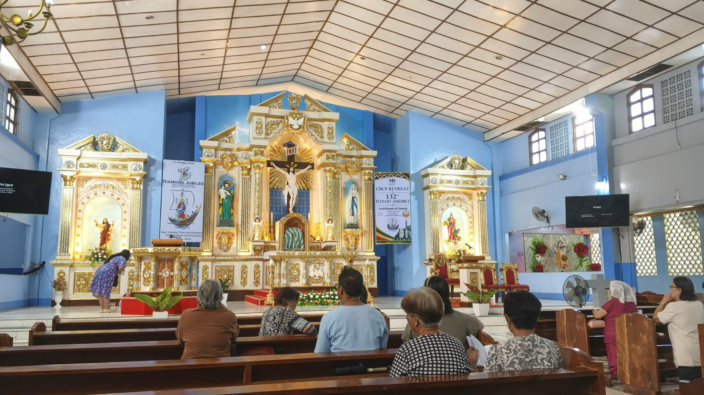

Putting God First
I believe that putting God first helps me make better decisions in life. Through prayer and faith, I find strength and guidance whenever I face challenges. I want to remember that no matter how busy life becomes, I should always make time for God.

Choosing Honesty Every Day
Honesty is important because it builds trust and shows respect for others. I want to practice being truthful in my words and actions, even when doing the right thing is difficult.

Being Responsible Online
Technology is useful, but we should know how to use it responsibly. Before posting or sharing anything, I should think about its effects on other people. I want to use the internet to spread kindness and positivity.
A Little Reflection
As a student, I am still learning and discovering who I want to become. I know that I will experience mistakes, struggles, and challenges along the way. But with faith, honesty, and determination, I believe I can become a better person. I want my actions, both in real life and online, to reflect the values I believe in.
MY PERSONAL VALUES
Faith
Keeping God at the center of my life and trusting His plans.
Honesty
Choosing truth in my words and actions.
Growth
Learning from my mistakes and experiences.
Kindness
Treating others with respect and compassion.
A Reminder to Myself
"I may not have everything figured out yet, but I trust the process, keep my faith, and continue working toward the person I want to become."